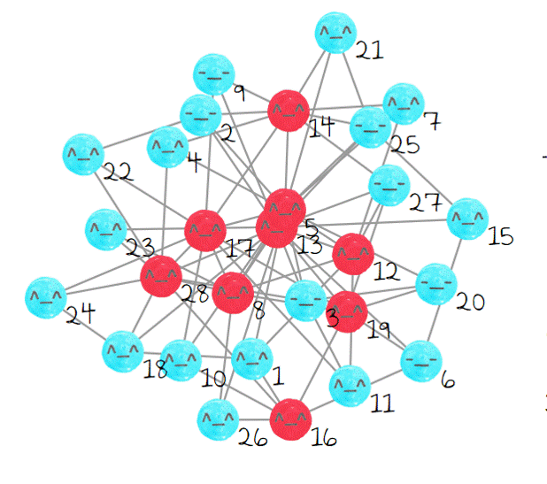

Bad Influence er et multiplayerspil hvor hver spiller har et “netværk” af medspillere.
Hver spille kan kun se og kommunikere med sit eget netværk.
Spillet vil gennemgå en række scenarier hvor hver spiller skal vælge mellem to muligheder.
Målet er at ens netværk skal være i konsensus med hinanden før tiden udløber, dette skal ske ved at chatte sammen i spillet.
Målet er at ens netværk skal være i konsensus med hinanden før tiden udløber, dette skal ske ved at chatte sammen i spillet.
 Day Trader er et multiplayerspil omkring hvordan bobler kan opstå i finansverdenen. I dette spil er et firma repræsenteret af en sæk med glade og ikke glade medarbejdere(ansigter).
Day Trader er et multiplayerspil omkring hvordan bobler kan opstå i finansverdenen. I dette spil er et firma repræsenteret af en sæk med glade og ikke glade medarbejdere(ansigter).
Hver spiller skal gætte om firmaet er bestående af primært ”glade” eller ”ikke glade” omstændigheder, ud fra den information spillerne får i spillet.